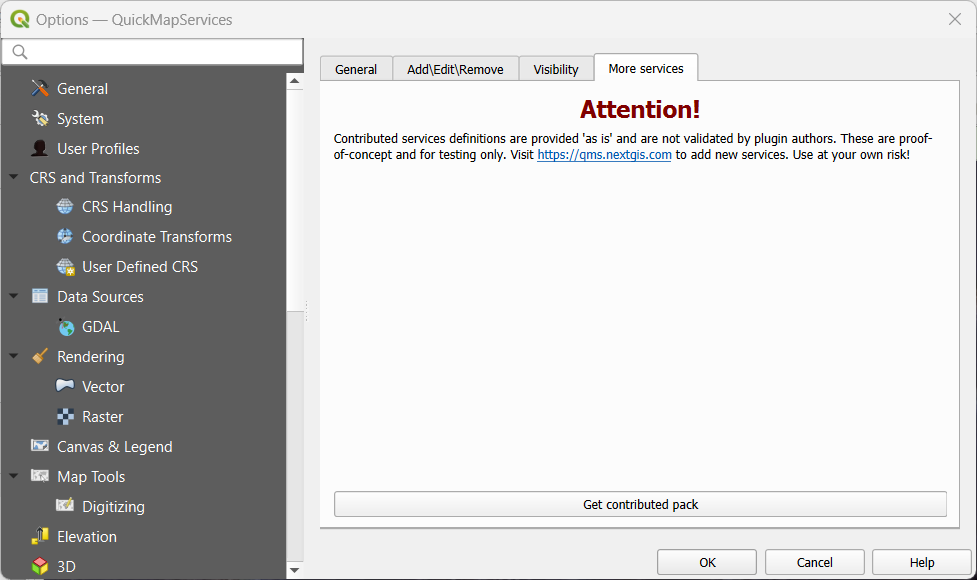

PAMGuard can now use any geo referenced image file in GeoTIFF format as a background image.
GeoTIFF files can be obtained from a wide number of sources. They can often be generated from GIS software, such as QGIS, or nautical charts in GeoTIFF format can often be purchased or extracted from chart plotting software.
QGIS is a powerful open source and free GIS software packages. These operations can probably also be performed with many other GIS softwares, but the PAMGuard team like open source products!
This is not intended to be a reference manual for QGIS, but does summaries what you'll need to install, and how to use it. There are plenty of resources and videos on line that will tell you how to do this in more detail.

There are plenty of tutorials out there that will give a lot more detail on these operations.
Be aware that a very high resolution map may slow down the map display and impact PAMGuard operation. Generally, this is something that is best used only in viewer mode when you want to make a pretty plot for a presentation.